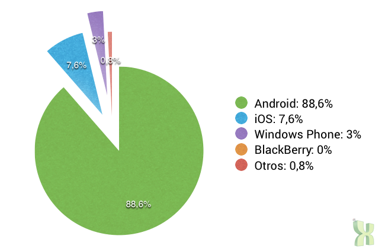
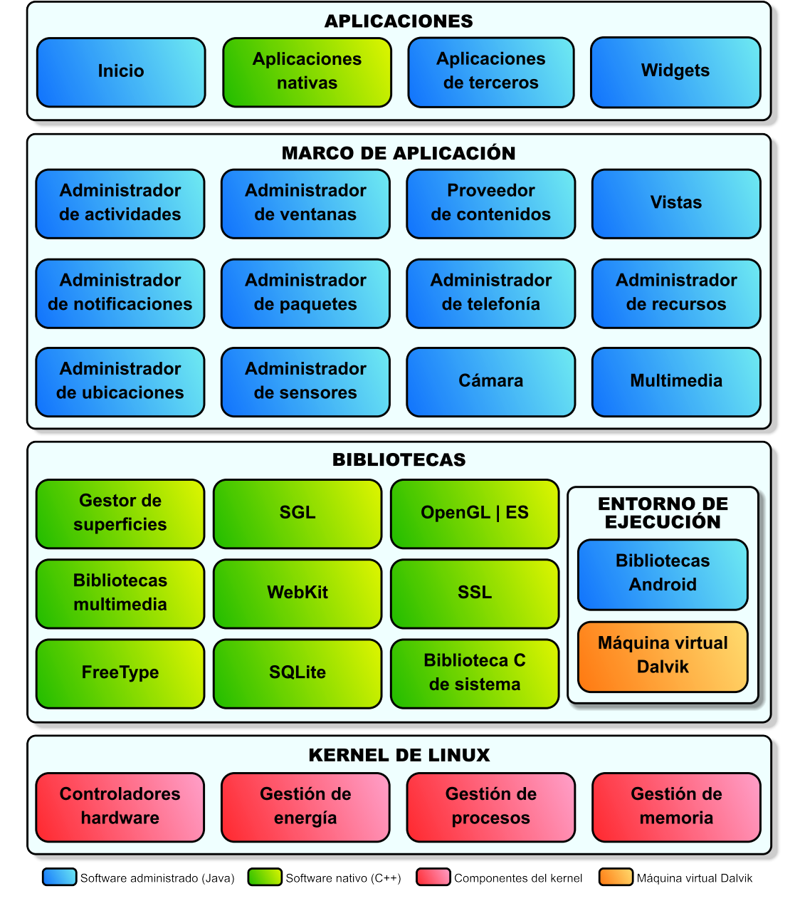
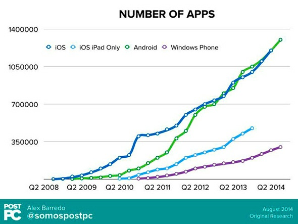
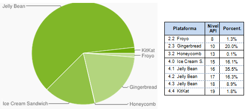

Android
1. Introducció
Creat per Isaac Muro

smartphone
Un smartphone (telèfon intel·ligent) és un telèfon mòbil de gamma alta construït sobre una plataforma mòbil amb capacitats i connectivitat superiors a les que té un telèfon convencional.
(Posar imatge)tablet
Un tablet (tauleta tàctil) és un ordinador portàtil, més gran que un telèfon mòbil o una PDA, integrat dins d’una pantalla tàctil plana i principalment operat mitjançant la seva pantalla tàctil.
(posar imatge) Infografia sobre telefons més popularsCaracterístiques dels dispositius mòbils
- Té una mida reduïda i un pes lleuger
- Té una connexió sense fils contínua (Wifi o telefonia)
- Té una alta capacitat d’interacció amb l’usuari mitjançant una pantalla tàctil
- Té capacitat de processament i memòria interna.
Limitacions en la programació de dispositius mòbils
- La seva capacitat de processament és reduïda
- La quantitat de memòria és reduïda (RAM i d’emmagatzematge)
- Solen tenir una connexió permanent a Internet. Han de tenir en compte la seguretat
- La connexió a Internet, si és mòbil, té una velocitat limitada i desconnexions freqüents
Sistemes operatius per mòbils
Android |
iOS |
| BlackBerry OS |
Windows Phone |
Android
Desenvolupat per Google i l’Open Handset Alliance. La majoria de fabricants més importants tenen telèfons i tablets que s’executen sobre Android (Samsung, HTC, Motorola, Sony-Ericsson. . . ). Té un 47% del mercat (dades de novembre de 2011).
iOS
Desenvolupat per Apple, està present únicament als productes de la marca Apple (iPhone, iPad i iPod); així i tot, té una presència al 43% del mercat.
Blackberry OS
Desenvolupat per RIM (Research In Motion), i present únicament als seus productes; ha baixat molt la seua quota de mercat, fins al 6% actual.
Windows Phone
desenvolupat per Microsoft i present fonamentalment als nous telèfons que Nokia va presentar a finals de 2011; la seva quota de mercat és molt petita actualment. El seu futur és incert i s’haurà de veure quantes companyies abracen la nova plataforma.
Quotes de mercat
La quota de mercat a Espanya el 28 d'abril del 2014
La revolució de l'iphone
El 2007, Apple va revolucionar el mercat de telefonia mòbil amb l'iPhone. Moltes característiques introduïdes per l'iPhone, ara són estàndards.
- Pantalla capacitiva i multitàctil
- GPS
- Teclat en pantalla
- Integració amb cerca de Google i Google Maps
- Connexió de dades permanent mitjançant 3G
La revolució de l'iphone II
Un parell de característiques que no estaven a l'original, però es van afegir més endavant.
- Aplicacions de tercers
- AppStore
Perquè Android?
- Projecte de codi lliure
- Gratuit
- Plataforma de dispositius mòbils més popular
- Desenvolupament en Java
Característiques d'Android
- Missatgeria (SMS i MMS)
- Suport de maquinari: accelerometres, càmera, brúixola, gps, ...
- Emmagatzemantge: Suporta SQLite
- Formats: Suporta multitut de formats multimèdia: imatge, so, video
- Flash: Suporta Adobe Flash
- Connectivitat: Suporta xarxes GSM/EDGE, CDMA, UMTS, Bluetooth, Wifi, ...
Capes D'Android OS I
Capes d'Android OS II
- Kernel de Linux: Aquesta capa conté tots els drivers de dispositius (a baix nivell) per als components de maquinari del dispositiu Android.
- Llibreries: Conté el codi que proporciona les característiques principals de l’Android OS.
- Android Runtime: Proporciona una sèrie de llibreries fonamentals que permeten escriure aplicacions d’Android fent servir Java. Inclou la màquina virtual Dalvik.
- Framework d’aplicacions: proporciona les diferents característiques de l’Android OS a les aplicacions dels desenvolupadors.
- Aplicacions: a la capa més alta, hi trobem les aplicacions que es distribueixen amb el dispositiu Android.
Google Play
Un dels factors fonamentals que determinarà l’èxit d’una plataforma mòbil és la quantitat d’aplicacions que té.
El fet que sigui fàcil publicar les seves aplicacions per als desenvolupadors i fàcil comprar-les per als usuaris determinarà la facilitat amb què creixerà el mercat d’aplicacions.
Google Play
Dispositius Android segons plataforma
deures
T1: Videotutorial de la posada en marxa l'entorn de desenvolupament d'Android
- Instalar previament l'entorn Java (jdk)
- Instalar l'ADT (Android Development Toos) per eclipse o el Bundle.
- Instalar les APIS 8 i 10 d'android i la última que hi hagi en aquest moment.
- Instalar el Google services i Google Services for Froyo